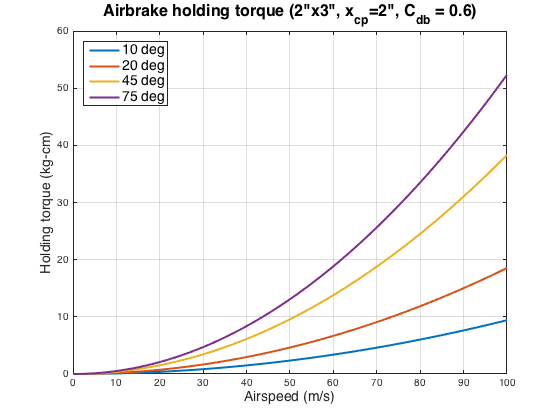

%%%%%%%%%%%%%%%%%%%%%%%%%%%%%%%%%%%%%%%%%%%%%%%%%%%%%%%%%%%%%%%%%%%%%%%%%%% % Actuator Static analysis % % A DC servo motor is being considered for a actuating a airbrake. This % script relates servo strength to other properties of the airbrake. % % Static performance can be evaluated by the static relationship between % torque and aerodynamic force % % Tm = xcp * Db * sin(del) % % where Tm is motor torque, xcp is the distance of the center of pressure % of the airbrake to the leading edge, Db is the total drag on the % airbrake, and del is the airbrake deflection angle. %%%%%%%%%%%%%%%%%%%%%%%%%%%%%%%%%%%%%%%%%%%%%%%%%%%%%%%%%%%%%%%%%%%%%%%%%%% clear;clc;close all % Helpful conversions in2m = 0.0254; m2in = 1/in2m; % Motor torque in kg-cm against airspeed in m/s. Considering an airbrake % 1.5" by 3". xcp = 2 * in2m; % Center of pressure (m) Ab = 1.5 * 3 * in2m^2; % Airbrake area (m2) rho = 1.225; % Density (kg/m3) Cdb = 0.6; % Airbrake drag coefficient (1) v = 0:0.1:100; % Airspeed (m/s) % Plot for range of deflection angles figure title('Airbrake holding torque (2"x3", x_{cp}=2", C_{db} = 0.6)', ... 'FontSize', 16) xlabel('Airspeed (m/s)', 'FontSize', 14) ylabel('Holding torque (kg-cm)', 'FontSize', 14) hold on; box on; grid on; for del = degtorad([10 20 45 75]) Tm = xcp .* 0.5 .* rho .* v.^2 .* Cdb .* Ab .* sin(del); % Convert from kg-m to kg-cm Tm = Tm * 100; plot(v, Tm, 'LineWidth', 2) end leg = legend('10 deg', '20 deg', '45 deg', '75 deg'); set(leg,'FontSize', 14, 'Location', 'northwest'); %%%%%%%%%%%%%%%%%%%%%%%%%%%%%%%%%%%%%%%%%%%%%%%%%%%%%%%%%%%%%%%%%%%%%%%%%%% % Actuator Dynamic analysis % % Using the previous characteristics we can simulate the step time response % at different airspeeds by assuming a first order model to the motor % % T(s) A % ---- = --------- % V(s) tao*s + 1 % %